Необхідна інформація представлена у таблицях 2,3.
Таблиця 2 Таблиця З
Щоденна кількість пасажирів за Ряд даних про відстані (км), що
останні 50 днів долають літаки авіакомпанії


Існує кілька способів упорядкування цієї інформації.
1. Розподіл частот
Розподіл частот (або частотна таблиця)передбачає таке упорядкування даних вибіркової сукупності, за якої дані спостережень поділяються на певні інтервали або класи інтервалів (просто класи).
Кількість класів у таблиці розподілу частот взагалі може бути довільною.
Існує просте правило для визначення числа класів 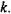Це число має задовольняти нерівність:
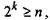 (2)
де 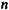- об'єм вибіркових даних,
- найменше число класів.
У нашому прикладі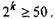
Розв'язуючи нерівність, знаходимо, що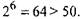 Отже, згідно правила (2) найменша кількість класів у таблиці розподілу має бути рівною 6.
Кожен клас інтервалу визначається розмахом значень варіант, що визначають границі цього класу.
Для побудови таблиці розподілу частот ширина інтервалу класу 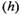 може бути визначена як:
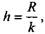 (3)
де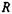- розмах значень фактору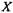та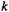- число класів.
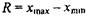 (4)
де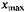- найбільше значення варіанти,
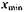 - найменше значення варіанти. Взявши за основу той факт, що число класів у таблиці розподілу частої для кількості пасажирів дорівнює 6,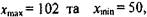 обчислимо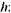
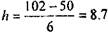
Число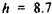 не зовсім зручне для побудови таблиці, тому можна його змінити (збільшенням або зменшенням). У нашому випадку було вибране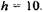
Зауваження. Іноді необхідно визначити середину кожного інтервалу, для цього необхідно додати нижню та верхню границі інтервалу і розділити на 2. Середини кожного інтервалу також представлені у таблиці 4.
Таблиця 4
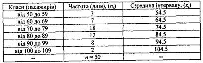
Завдання для експрес-контролю.
Вибіркова сукупність містить 100 спостережень, найбільше з яких дорівнює 212 та найменше - 42. Припустимо, що у таблиці розподілу частот бажано мати 7 класів.
а) знайти ширину інтервалу класу;
б) визначити середину інтервалу І класу, якщо його нижня границя
дорівнює 40.
2. Згрупований розподіл накопиченої частоти
Часто поряд з розподілом частоти варіанти необхідно визначити, скільки існує варіант більших або менших від деякого значення. У цьому випадку необхідно знаходити розподіл накопиченої (кумулятивної) частоти.
Таблиці розподілу кумулятивної частоти легко побудувати на основі відповідних таблиць розподілу частот.
Розподіл накопиченої частоти меншої від певних значень для кожного класу одержується послідовним додаванням частої даною класу до числа всіх частот у попередніх класах, починаючи ч першого і кінчаючи останнім.
Таблиця 5 показує розподіл накопиченої частоти меншої під певних значень для статистичних даних відносно кількості пасажирів.
Таблиця 5
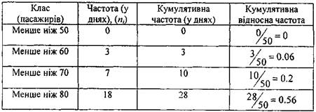
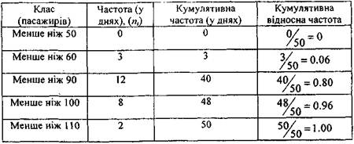
Як видно з Таблиці 5, число пасажирів не зменшується менше 50.
Стосовно розподілу накопиченої частоти більшої від певних значень, то вона одержується послідовним відніманням частот попередніх класів, починаючи з першого і кінчаючи останнім, що знайшло відображення у таблиці 6.
Таблиця 6
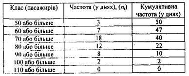
З таблиці 6 знаходимо, що кількість варіант більших ніж 80 (пасажирів) становить у середньому 22 дні.
3. Розподіл відносної частоти
Розподіл відносної частоти виражає частоту у межах певного класу як долю процентів всієї кількості спостережень вибіркової сукупності.
Це дозволяє встановити відносне співвідношення кількості спостережень даного класу відносно їх загальної кількості. Використовуючи дані таблиці 4, обчислимо відносну частоту 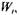 як
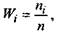 (5)
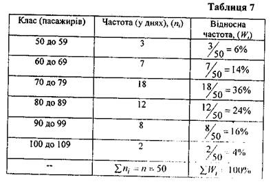
З таблиці 7 помічаємо, що у 36% вибіркових даних кількість пасажирів, що віддали перевагу цій авіакомпанії, знаходяться у інтервалі від 70 до 79 пасажирів.
4. Емпірична функція розподілу
Нехай маємо частотний розподіл ознаки X.
Нехай 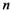- об'єм спостережень та 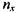 - число спостережень (варіант), що менше, ніж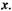
Тоді відносна частота події 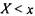 дорівнює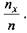
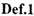 Емпіричною функцією вибіркового розподілу називають функцію 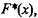яка визначає для кожного значення х відносну
частоту події 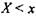 і обчислюється за формулою
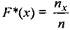 (6)
Властивості емпіричної функції розподілу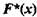
1. 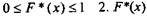- зростаюча функція
2.
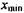 - найменше значення ознаки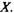 Використовуючи Таблицю 5, одержимо емпіричну функцію вибіркового розподілу пасажирів
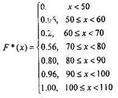
Функція
на Рис. 1.